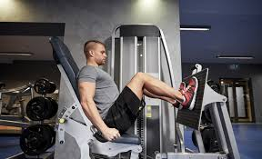
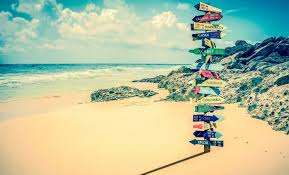

Ik ben nour en een van mijn hobby's zijn gamen. Met gamen zoek ik mijn afleiding. Ik speel verschillende games.
Zoals de populaire game Fortnite en counterstrike global offensive. Het zijn fps spelletejs dat betekend dat veel shieten er van pas komt.
Gamen
Ik doe ook aan fitness. naast elkedag progammeren moet je ook kunnen bewegen.
Ik vind dat een van de belangrijkste factoren in het dagelijks leven. Ik vind krachttraining echt een van de leukste dingen om te doen in de sportschool
Fitness
Reizen, Ik vind reizen echt te gek ik heb al best wel veel landen bezocht. Vooral het midden-oosten . Ik zou het liefst nog veel meel landen bezoeken vooral in Azië of Zuid-Amerika
Reizen


